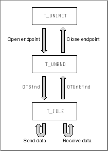
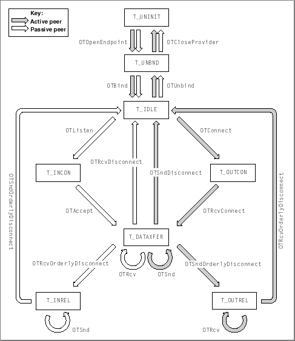

Legacy Document
Important: The information in this document is obsolete and should not be used for new development.
Important: The information in this document is obsolete and should not be used for new development.


About Endpoints
An endpoint is the communications path between your application and an endpoint provider, which is a layered set of protocols that define how data and other information are exchanged between you and a remote client. The endpoint consists of a set of data structures, maintained by Open Transport, that specify the components of the endpoint provider and the manner in which the provider is to operate. In the process of opening an endpoint, you configure the endpoint provider and specify the protocol or set of protocols you want to use to transfer data and, if required, the hardware link. The section "Configuring and Opening a Provider" explains how you specify the software and hardware support your application requires. Whether you specify a single protocol or a layered set of protocols, the type of service provided by the highest-level protocol defines the type of the endpoint. For example, if you specify the AppleTalk Transaction Protocol (ATP), which offers connectionless transaction-based service, the endpoint is a connectionless transaction-based endpoint.When you open an endpoint, Open Transport creates a data structure that contains information about the services the endpoint provider offers, the limits on the size of data it can send and receive, the size of internal buffers used to hold data, the current state of the endpoint, and so on. Open Transport obtains this information from the particular protocol implementations that you specify when you configure the endpoint provider. You can access information in some fields of this structure by calling functions that return information about the endpoint provider. Other fields of the structure are private and can be accessed only by Open Transport.
Opening an endpoint also creates an endpoint reference, a number that uniquely identifies this endpoint and that you must specify when calling any function relating to this endpoint.
Before you can use the endpoint to transfer data, you must bind the endpoint--that is, you must associate the endpoint with a protocol address. Depending on the protocol you use, you can specify this address as a symbolic name or as a network address. Specific address binding rules and address formats also vary with the protocol you use. In general, you cannot bind more than one connectionless endpoint to an address, but you can bind several connection-oriented endpoints to a single address.
Open Transport functions that you can use only with endpoints are called endpoint functions. You use endpoint functions to create and bind an endpoint, to obtain information about an endpoint, to establish and break down connections, and to transfer data. What functions you can call for an endpoint depend on the type of the endpoint and on its state. The behavior of a function is determined by the endpoint's mode of operation. In order to write Open Transport applications that behave in a reliable and predictable manner, it is important that you understand how these factors affect the behavior of an endpoint provider. This section describes the different types of endpoints, describes the effect of an endpoint's mode of operation on the behavior of endpoint functions, and explains how Open Transport uses information about endpoint states to manage endpoints.
Endpoint Types and Type of Service
There are four types of endpoints, each offering a different type of service:
The chapter "Introduction to Open Transport" defines and describes the different services that each protocol offers and explains some of the criteria you might use for selecting a specific type. The documentation for the protocol you are using provides information about how a type of service is implemented for your endpoint and the options that you can use to fine-tune its behavior. The section "Using Endpoints" describes how you use endpoint functions to implement these services. However, before you read that section, you might find it helpful to understand the naming conventions used for endpoint functions because these are directly related to an endpoint's type of service. These conventions are described in the next section.
- connection-oriented transactionless service
This type of service allows for the transfer of very large amounts of data with guaranteed data delivery and a reliable data stream. ADSP and TCP provides this type of service.
- connection-oriented transaction-based service
This type of service allows you to conclude an unlimited number of parallel transactions. It guarantees delivery and can detect duplicate sends. ASP (not currently implemented) provides this type of service.
- connectionless transactionless service
This type of service provides best-effort delivery and allows the transfer of relatively small amounts of data at one time.Some protcols can calculate checksums for incoming packets; IP and DDP provide this type of service.
- connectionless transaction-based service
This type of service allows for the transfer of larger amounts of data than connectionless transactionless service. It also provides some error checking, detects duplicate sends, and guarantees that response packets are delivered in the order sent. ATP provides this type of service.
Naming Conventions for Endpoint Functions
You can use endpoint functions that return information about the endpoint's state, address, or modes of execution with all endpoint types. However, the type of the endpoint determines which endpoint functions you can call to transfer data. There is no single function that you can use to send data or to receive data. For example, when you send data using a connectionless transactionless endpoint, you call theOTSndUDatafunction; when you send data using a connection-oriented transactionless endpoint, you call theOTSndfunction. Table 4-1 presents a summary of the function names for functions used to transfer data. The functions are grouped together based on the endpoint's type of service.Table 4-1 The names of functions used to transfer data
The following bulleted items explain the5 conventions used to name the different groups of functions:
Of course, you can use the functions that establish and tear down connections only with connection-oriented endpoints. These functions suggest their use in their names: for example,
- Transaction-based endpoints send and receive requests and replies. If a function name contains the string "Request" or "Reply," you use the function for a transaction-based endpoint; for example,
OTSndURequestorOTSndRequest.- Transactionless endpoints send and receive data, not requests or replies. If a function name contains the string "Snd" or "Rcv" but does not contain "Request" or "Reply," you use the function for a transactionless endpoint; for example,
OTSndorOTSndUData.- Connectionless endpoints must include the destination address as a parameter to every send operation and the source address as a parameter to every receive operation. This is signalled by the letter "U" in the name of a function. Thus, you call the
OTSndUDatafunction for a connectionless transactionless endpoint, but you call theOTSndURequestfunction for a connectionless transaction-based endpoint.- Connection-oriented endpoints do not need to include addresses in send and receive operations because establishing the connection also determines the addresses, which do not change during a session. The names of functions that can be called for connection-oriented endpoints are exactly the same as for connectionless endpoints except that the "U" is omitted. Thus, you call the
OTSndfunction for a connection-oriented transactionless endpoint and theOTSndRequestfunction for a connection-oriented transaction-based endpoint.
OTConnectorOTSndDisconnect.Connection-oriented endpoints support two kinds of disconnects: abortive disconnects and orderly disconnects. An abortive disconnect breaks a connection immediately, even if this were to result in loss of data; an orderly disconnect (or "orderly release") allows an endpoint to send all data remaining in its send buffer before it breaks a connection. These two kinds of disconnects are reflected in the names of the functions used:
OTSndDisconnectfor an abortive disconnect andOTSndOrderlyDisconnectfor an orderly disconnect.Endpoint Options
The goal of Open Transport is to abstract basic types of service offered by network protocols. For example, ADSP and TCP both offer connection-oriented transactionless service. As a result, changing the endpoint to a different protocol (but one that provides the same type of service) would require minimal changes to the application and consequently make your application virtually independent of the underlying transport used to transfer data. Achieving transport independence, however, also means being willing to forego any special advantages or features that a protocol has to offer. If it is not possible for you to do without these features, you can use options to take advantage of protocol-specific features.An option is a value you can set for an endpoint, to link the behavior of the provider more closely to a specific protocol. By using options, you can take advantage of a feature that is unique to a protocol.
In general, the use of options decreases the transport independence of your application. When you open an endpoint, the endpoint provider creates a buffer containing default option values that it chooses to ensure maximum portability across protocol families. It is recommended that you use these values rather than setting different values. However, if you need to customize transport services, you might need to specify different option values. Selecting alternate option values begins a process called option negotiation. Besides noting those instances in which you can specify option information when calling endpoint functions, this chapter provides no information about options. For detailed information about options and for a description of the
OTOptionManagementendpoint function, see "Option Management".Modes of Operation
An endpoint provider, like other Open Transport providers, can also be characterized by its mode of operation, which determines
The chapter "Providers" explains these concepts and describes the functions you use to get and set a provider's mode of operation.
- whether the functions used for that endpoint provider execute synchronously or asynchronously
- whether the provider blocks or waits when sending or receiving data
- whether the provider copies data that you want to send before sending it
One thing to keep in mind is that not all endpoint functions operate differently in asynchronous mode. Those functions that do behave differently are listed in Table 4-2. For each function, the table lists the corresponding completion event.
Table 4-2 Endpoint functions that behave differently in synchronous and asynchronous modes
Endpoint States
Each endpoint has an attribute known as its endpoint state. An endpoint state governs which endpoint functions you can call for the endpoint. For example, if you open an endpoint but do not bind it, it is in theT_UNBNDstate and the only two functions you can call for the endpoint areOTCloseProviderorOTBind.The endpoint's type of service determines the possible states an endpoint can be in while it is transferring data. For example, a connectionless endpoint can only transfer data while it is in the
T_IDLEstate, and a connection-oriented endpoint can only transfer data while it is in theT_DATAXFERstate. Table 4-3 describes possible endpoint states for connectionless and connection-oriented endpoints and suggests in parentheses an English equivalent for the name of each constant.Table 4-3 Endpoint states
Figure 4-1 shows a diagram illustrating the possible endpoint states for a connectionless endpoint.
Figure 4-1 Typical endpoint states for a connectionless endpoint

A connectionless endpoint can be in one of three states:
T_UNINIT,T_UNBND, orT_IDLE. Before you open the endpoint, it is in theT_UNINITstate. After you open the endpoint but before you bind it, it is in theT_UNBNDstate. After you bind the endpoint, it is in theT_IDLEstate and is ready to transfer data. A connectionless transactionless endpoint would use theOTSndUDataorOTRcvUDatafunctions to transfer data; a connectionless transaction-based endpoint would use theOTSndURequest,OTRcvURequest,OTSndUReply, andOTRcvUReplyfunctions to transfer data. When the endpoint finishes transferring data, you must first unbind the endpoint--that is, dissociate the endpoint from its address. At this stage, the endpoint returns to theT_UNBNDstate. Then you can close the endpoint, at which time the endpoint returns to theT_UNINITstate.Figure 4-2 shows a state diagram illustrating the possible endpoint states for a connection-oriented endpoint.
Figure 4-2 Possible endpoint states for a connection-oriented endpoint

Like a connectionless endpoint, a connection-oriented endpoint is in the
T_UNINITstate until you open it and then in theT_UNBNDstate until you bind it. After you bind an endpoint but before you inititate a connection, an endpoint is in theT_IDLEstate.During the connection process, the endpoint provider initiating the connection, known as the active peer, calls the
OTConnectfunction to request a connection. At this point, the active peer is in theT_OUTCONstate. The endpoint provider listening for a connection request, known as the passive peer, calls theOTListenfunction to read an incoming request. After it has read the request, the passive peer changes to theT_INCONstate. It can now either accept the connection using theOTAcceptfunction or reject the connection using theOTSndDisconnectfunction (not shown in Figure 4-2). If the endpoint accepts the connection, it changes to theT_DATAXFERstate; if it rejects the connection it goes back to theT_IDLEstate.The active peer must acknowledge the response using the
OTRcvConnectfunction (for a connection that has been accepted) or theOTRcvDisconnectfunction (for a connection that has been rejected). Calling theOTRcvConnectfunction establishes the connection and places the active peer in theT_DATAXFERstate. Calling theOTRcvDisconnectfunction rejects the connection and places the active peer in theT_IDLEstate (not shown in Figure 4-2). After they are connected, endpoints can transfer data using simple send and receive operations or using transaction requests and replies, depending on whether the endpoint is transactionless or transaction-based.When you have finished transferring data, you should tear down the connection by using an orderly disconnect process if possible. That is, you should check to see whether the protocol supports an orderly disconnect. If it does, you initiate this process by calling the
OTSndOrderlyDisconnectfunction. This places the calling endpoint in theT_OUTRELstate. It also creates a pendingT_ORDRELevent for the other endpoint. The endpoint to which you have sent the disconnection request can become aware of the event by means of a notifier function or by calling theOTLookfunction. It must then acknowledge receiving the disconnection request by calling theOTRcvOrderlyDisconnectfunction. Then it must tear down its side of the connection by also calling theOTSndOrderlyDisconnectfunction, which you must also acknowledge. Disconnecting the endpoints places them in theT_IDLEstate again, and you can reconnect or close them.
Open Transport uses endpoint state information to manage endpoints. Consequently, it is crucial that you call functions in the right sequence and that you call functions to acknowledge receipt of data as well as of connection and disconnection requests. Sending these acknowledgments is necessary to leave the endpoint in an appropriate state for further processing.
- Note
- It is not required that the active peer in the disconnect phase be the same as the active peer in the connect phase.

Table 4-4 lists the functions that can change an endpoint's state and specifies what the resulting state is depending on whether the function succeeds or fails.
Table 4-4 Functions that can change an endpoint's state